Configuration
At first use, you must configure the different information in software QSoft :
- Language
- User data
- Company data
- Mailing pathname
- Logo
Read if necessary documentation about the software configuration here.
First window
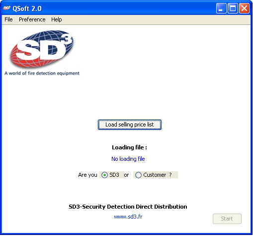- Load Selling price list
Click the button "Load Selling price list". 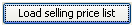
Load your list of products selling prices.
This list must be in Excel format (.xls) and must be in the following form:
column 1 : Reference
column 2 : Decription
column 3 : NET PRICES IN €
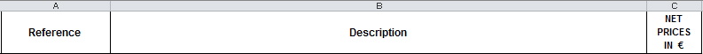
- SD3 or Customer ?
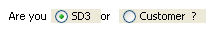
Choose whether you're company SD3 or if you are a customer outside.
- Start
Click the button "Start".
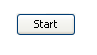
This button is active only if you loaded the selling price list.
- Exit QSoft
If you want to exit QSoft software, click on the red cross at the top right or go to the File menu -> Exit.
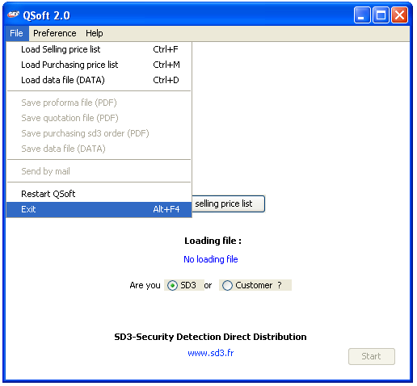
- Restart QSoft
If you want to restart QSoft software, go to the File menu -> Restart.
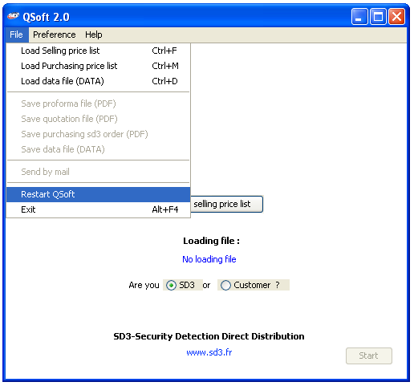
- Visit the web site
You can visit the website of the company SD3 by clicking on the blue link :
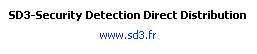
Second window
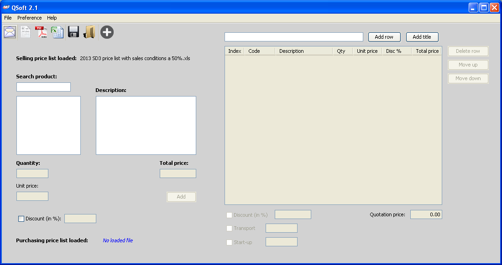- Load purchasing price list
Click on  to load (if necessary) the
purchasing price list.
to load (if necessary) the
purchasing price list.
This list must be in Excel format (.xls) and must be in the following form:
column A : Reference
column B : Decription
column C : PP....
Example for 2013:
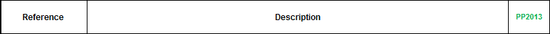
This list will allow QSoft software to make calculations to give you more information such as:
- The multiplier coefficient (KP) :
- The margin (Profit) in % :
- The total multiplier coefficient (Total KP) :
- The total margin (Total Profit) in % :
Selling price / Buying price
((Selling price - Buying price) / Selling price) * 100
Total Selling price / Total Buying price
((Total Selling price - Total Buying price) / Total Selling price) * 100
 WARNING:
WARNING:
Loading the purchasing price list delete all the quotes that you have entered previously.
- Create a quotation
To create your quotation :
- Search products using the search bar "Search Product:". 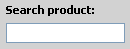
- Select the product from the list that appears below.
- Define the quantity in "Quantity". 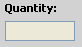
- Change the unit price (if necessary) in "Unit Price". 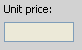
- If you would like a discount on the product, check the "Discount (in %)" box. 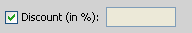
- Click the button "Add".
Leave the box checked so you can edit the quotation in PDF displaying the discount.
In the end, you can add to the quotation :
- A total discount:
- A transport price:
- A start-up price:
Check the "Discount" box on the right, enter your discount in % and press the Enter key.
Check the "Transport" box, enter your price in € and press the Enter key.
Check the "Start-up" box, enter your price in € and press the Enter key.
by product, in the table, as well as the multiplier coefficient and the total profit in % made in the quote.
- Export
Once the quotation is completed, you can:
- Create a proforma
- Export quotation in PDF
- Export quotation in Excel
- Save your quotation in .data 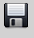
- Send the PDF quotation by mail
WARNING:
Safeguarding the quotation in PDF on a remote server will prevent the opening
and direct visualization of the file.
It will open manually.
For open an existing .data file, click to 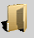
- Exit or Restart
If you want to exit QSoft software and you have not saved your work in .data,
the software will ask you if you are sure you want to exit without saving.
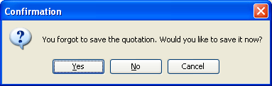